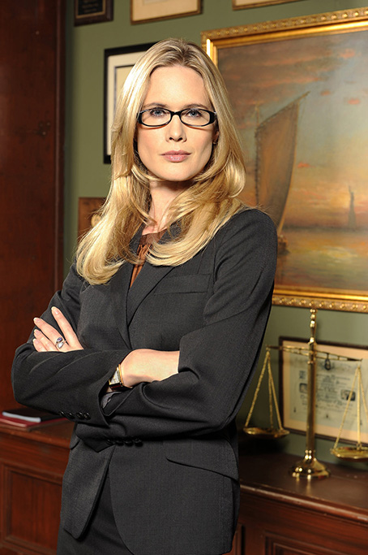
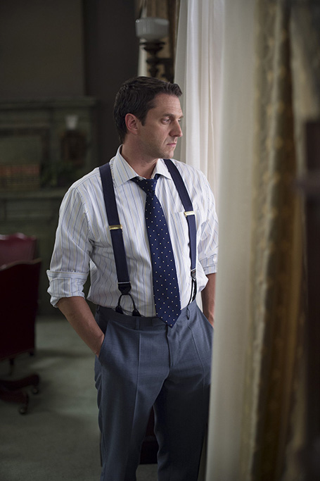

- 


- 


Episodes
Season 16 Episode 16
December Solstice
After last week's shocking discovery about baby Noah's paternity, Benson asks Barba over to her
apartment
for an off-the-book discussion. Hypothetically speaking, if Johnny D. fathered a child with Ellie
Porter, is
that something that NYPD would have to disclose? Benson, who's already started the adoption paperwork
for
Noah, is terrified to lose her baby boy to a sex-trafficking monster. Barba assures Olivia that Johnny
D.
doesn't have to know, and the worried mother breathes a sigh of relief.
Back at the station, Benson has two visitors: Delilah and Judith Briggs, the daughters of the literary
icon
Walter Briggs. They're worried about their elderly father, whose much younger sixth wife, Charmaine,
pumps
him full of erectile dysfunction pills and makes him have sex every day. Delilah and Judith are not only
concerned about their father's safety, considering he has a heart condition, but they consider what
Charmaine is doing to be rape, as Walter has dementia and cannot consent to sex. They believe their
stepmother wants to have a child, and thus a larger share of his estate when he passes, but they can't
stop
her because Charmaine won't let them near Walter.
Rollins and Carisi stop by the Briggs home to do a welfare check, but when they try to speak to Walter
alone, Charmaine refuses to let him out of her sight. Walt claims he's happy to keep his wife satisfied
-
it's his manly duty as her husband. It seems as if Walt isn't complaining, although he does appear
confused
and loses his train of thought easily. The next day, the detectives get word that Walt had a heart
attack
and is in the hospital. Rollins and Amaro visit Delilah at the off-Broadway theater she runs, and learn
Charmaine is once again refusing to let Walt's daughters see him, despite a court order. Meanwhile, when
Benson and Carisi go to see Walt, they learn Charmaine has removed him from the hospital against medical
advice. Charmaine claimed she was transferring Walt to another hospital, but there's no sign of him
anywhere. Walt and Charmaine are officially missing.
Luckily, Rollins has a lead on Walt's location. A private ambulance driver tells her he got a call to
pick
up Briggs and his "crazy wife," but instead of taking them to another hospital, Charmaine told him to go
to
a private airport in Westchester. Apparently they were taking a trip to Canada. The driver refused, so
Charmaine made him stop the car in the middle of 57th Street, where she dragged the old man into a cab.
SVU
catches up with the couple at the Westchester airport, and instead of a trip to Canada, they get another
trip to the courthouse. After what Charmaine put Walt through, Delilah and Judith demand to be appointed
Walt's guardians. The judge asks Walt if his wife is taking care of him, to which he responds that she
is.
However, after further questioning, it's clear Walt has very little idea of where he is, let alone what
his
daughters' names are. The judge refuses to determine guardianship until Walt has a psychological and
physical examination, so she sends him back into the hospital, with visitation rights for his
daughters.
The next morning, SVU gets some unfortunate news. Briggs had another heart attack and died, and since
the
judge put off ruling on guardianship, his wife still has control over his estate - and his body. Amaro
and
Carisi get a court order and stop Charmaine from taking his body on another hide-and-seek trip. Upon
examination, the coroner discovers Charmaine made one last attempt to have a child with Walter before he
died by calling a specialized company to extract his sperm an hour before he died. With this latest
information, on top of the blue pills and flight from the hospital, Barba is finally on board with the
theory that Charmaine killed her husband, and is prepared to take the case to trial.
But just a day or so into the trail, Delilah, Judith and Charmaine receive a video message from Walter.
In
it, he thanks Charmaine for saving his life and accuses his ex-wives of turning his daughters against
her.
He tells Delilah that he stopped wanting to see her after she wrote a terrible stage adaptation of one
of
his books and wouldn't stop pestering him for the rights to it. He says Charmaine actually fought him on
it,
saying a father should see his children, but he refused. When Charmaine takes the stand, she explains
herself further. Walter knew he was dying, and he wanted to die in peace. She crushed up blue pills in
his
food because he was proud and didn't need to know a drug was helping him perform. She wanted to have his
child because she loved her husband.
After seeing the video, Judith confronts her sister, furious that she lied to her about Charmaine hating
them and refusing to let them visit. In fact, Delilah was the reason Walter didn't want to associate
with
his children. She was more interested in her bad play than her father's love. Judith wants to take the
stand
for the defense, but instead, the two sides come to an agreement. Charmaine pleads guilty to criminally
negligent homicide, and agrees to one year's probation on the condition Delilah doesn't put on the play.
While Charmaine will be cut out of the estate, her unborn child still controls one third. A fertility
clinic
implanted a surrogate with her and Walter's child.
Meanwhile, Barba is dealing with family drama of his own. His abuelita is old and sick, and his mother
is
struggling to take care of her. Barba tries to convince his mother to put abuelita in a retirement home,
but
she refuses. They go check out a place, but his grandmother hates it - she wants to stay in her
sixth-floor
walk-up. Barba finally has to force her into a home against her wishes. Unfortunately, before he can,
his
abuelita is found dead in her apartment. She did always say she wanted to die in her own home.
Season 16 Episode 15
December Solstice
The SVU team sits in surveillance vans, staking out a downtown brothel, while Carisi poses as a john
inside.
He's been waiting for his date for a while, but one of the madams, Martha, assures him a delivery of
young
girls is on the way. Just then a minivan arrives and scantily clad girls climb out, led by a woman SVU
knows
well: Selena Cruz, the trafficker Benson reunited with her son in the Season 16 premiere. Looks like
she's
back to her old tricks...
SVU busts the brothel, including Selena, Carisi and Martha, taking everyone into the station. Martha
pulls
Benson aside and tells her she's undercover - she's not with any agency, but the ring has her daughter
Ariel, who was kidnapped three years ago. Benson is skeptical, so Martha takes her to her apartment,
where
the walls are covered in a compilation of photos, newspaper clippings, maps and scrawls detailing
Martha's
hunt for her missing daughter. Ariel was supposed to be in the delivery of girls that night, but Ariel's
pimp, Timmer, held back two girls for disciplining. Despite Martha's story, Barba still wants to
prosecute
her. Martha pleads with Barba that she's not a criminal. She's personally bought and sent home half a
dozen
girls saving them from the sex trade. She was going to buy Ariel that night. Benson and Barba promise
they'll do their best to find Ariel, but they're going to need Martha's cooperation.
The detectives try to get the other prostitutes to give them info on Ariel, but nobody will talk,
including
Selena - not even when Amaro informs her Child Services took her son. Later, Selena has a change of
heart
and wants to see her son again. She gives SVU the address of a party house in Queens, which Martha
recognizes. She knows the madam, Tracy. SVU stakes out the place and sees Timmer bringing in three
girls,
but no Ariel. When Timmer leaves, the detectives spot a beer delivery truck and bust the driver, Tommy,
for
illegal distribution of alcohol to a residence.
Super Bowl Sunday is the next day, and there's sure to be a big party at the Queens house. Tommy informs
them it's a high-class event featuring the best girls and the richest clients. The detectives decide to
take
advantage of this, putting surveillance on the house while Amaro takes Tommy's truck and poses as the
beer
delivery guy. As soon as he's inside, the rest of the team bursts in and takes over the house. Benson
explains to Tracy that she needs to go along with the party as planned, and when SVU makes the bust,
she'll
have to pretend she's busted, too - and she better make it look good. Benson then shows Tracy Ariel's
photo
and demands she make a special request for her. Looks like the detectives are going
undercover...
The next day, the party goes on as scheduled, with Benson decked out in her finest madam-wear, posing as
Tracy's sister-in-law, Carisi playing a rich john and Fin as a pimp. From the surveillance van outside,
Martha is starting to worry - she doesn't see Ariel anywhere. Inside, Carisi starts to get agitated -
where's his sexy ice bunny?! Just then, a car pulls up and a mystery pimp steps out. Tracy says it's The
Bishop, but he's alone - Timmer must have called him looking for Ariel. This can't be good.
The Bishop storms in, yelling for Timmer to explain who Benson and Fin are. When Benson turns around to
answer, she's shocked to see The Bishop is none other than Declan Murphy, SVU's former chief, now deep
undercover. When Carisi, who doesn't know who Murphy is, starts mouthing off, The Bishop pistol-whips
him in
the head, knocking him down. Suddenly, Benson pulls out her gun, points it at Murphy and tells him to
drop
the gun. After a short standoff, the rest of the SVU squad bursts in the door and busts the whole party,
including Benson, Fin and Carisi.
Back at the station, Murphy blows up at Benson and Fin for ruining his undercover mission. Benson
explains
to him they're looking for Ariel, but he has bigger priorities, specifically taking down a major
trafficker,
Johnny D. He does admit he knows Ariel, but she's damaged goods since Timmer beat her up before selling
her
to Johnny D. He doesn't know where Johnny D. keeps his girls and refuses to jeopardize his cover by
asking
to buy Ariel from him. It's too late for Ariel - she's too broken.
Rollins tries talking to one of the girls, Nina, whom Martha says knows Ariel. Nina is terrified but
admits
Martha was supposed to buy her and Ariel until Timmer walked in on Ariel on the phone with her and beat
her
till she blacked out. Nina won't say anything else - she doesn't want to end up like Ariel. Martha
watches
the interrogation, devastated that she almost got her daughter killed.
Rollins and Fin then tackle Timmer, bluffing that they've been onto him for a year, embedding Selena and
Martha just to get to him. But they're going to release him and The Bishop because they didn't have a
search
warrant. That doesn’t mean Timmer's in the clear, though, because both The Bishop and Johnny D. think
Timmer
set them up and they'll surely be out for blood. Timmer's a dead man... unless he helps SVU find
Ariel...
SVU and ESU storm a shady converted space, finding a number of half-naked battered women chained to the
walls, surrounded by syringes and drugs. After pushing through various rooms, they find Johnny D. using
Ariel as a shield, a piece of glass held to her neck. Benson takes him down and rescues Ariel, who is
finally reunited with her mother. Back at the station, Murphy congratulates the team for nabbing Johnny
D.,
but warns them not to turn their backs on him. He's trafficked girls for 20 years and has never been
arrested. Rollins asks if, now that Johnny is facing life in prison, Murphy can return to normal life,
but
it's not that easy. Johnny D. was the kingpin, and The Bishop is heir apparent.
That night, Benson is home reading to Noah when the doorbell rings. It's M.E. Melinda Warner with some
big
news - off-the-book news. She ran Johnny D.'s DNA when it went through the system and found a familial
match
in an unrelated case. He never needs to know, but Benson does. Johnny D. is Noah's father.